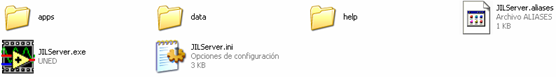
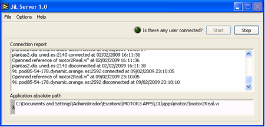

<!DOCTYPE html PUBLIC "-//W3C//DTD XHTML 1.1//EN"
  "http://www.w3.org/TR/xhtml11/DTD/xhtml11.dtd">

<html xmlns="http://www.w3.org/1999/xhtml">
<head>
  <meta name="generator" content= "HTML Tidy for Linux/x86 (vers 1 September 2009), see www.w3.org" />
  <meta http-equiv="Content-Type" content= "text/html; charset=us-ascii" />
  <title>HOMEPAGE - HECTOR VARGAS</title>
  <link href="../style.css" rel="stylesheet" type="text/css" />
</head>

<body>
<div id="headerI18N">espaqol | <a href="jil_en.html">inglis</a></div>
  <div id="container">
    <div id="header">
    <table width="100%" border="0" bgcolor="#E1E1E1">
      <tr>				
        <td width="35%"> 
          <div align="center"><a href="http://www.pucv.cl" target="_blank"></a></div>
		</td>
		<td width="50%">
		  <h2 align="right">Pontificia Universidad Catslica de Valparamso</h2>
		  <h2 align="right">Facultad de Ingenierma</h2>
		  <h2 align="right">Avda. Brasil 2147, Casilla 4059, Valpara&iacute;so, Chile</h2>
		  <p></p>
		  <p></p>
		  <p></p>
		  
        <h1 align="right">Dr. H&eacute;ctor Vargas Oyarz&uacute;n</h1>		  
        <h2 align="right">Profesor Asociado</h2>
		  <h4 align="right"><a href="http://www.eie.ucv.cl" target="_blank">Escuela de Ingenier&iacute;a El&eacute;ctrica</a></h4>
		</td>
		<td width="15%">
			<div align="center">
				<p></p>
          </div>
		</td>
		  	</tr>
		</table>
		<!-- Begin Top Menu -->
		<ul id="navlist">      
      	<li><a href="../index.html">PRINCIPAL</a></li>        
      	<li><a href="../research.html">INVESTIGACION</a></li>
        <li><a href="../teaching.html">DOCENCIA</a></li>		
		<li><a href="../development.html">DESARROLLOS</a></li>
        <li><a href="../ongoing.html">EN MARCHA</a></li>		
      	<li><a href="../links.html">ENLACES</a></li>		
      	<li><a href="mailto:hector.vargas@ucv.cl">CONTACTO</a></li> 
		</ul>
		<!-- End Top Menu -->	
	</div>
	
<div id="main"> 
  <h1 align="left">JIL Server (un nuevo enfoque para crear laboratorios basados 
    en web)</h1>
  <p> This approach is based on the use of a LabVIEW generic communication module 
      so-called JiL Server which implements the communication layer needed to 
      publish other LabVIEW VIs (as for instance, a Local Control VI) through 
      the Internet. Using this framework, Java applications are able of connecting 
      and controlling remote VIs by means of JiL Server. Figure 1 shows a schematic 
      diagram that illustrates this approach.</p>
	  
	<p></p>
	
	<p align="center"><br />
      <strong>Figure 1</strong>: Communication Ejs/LabVIEW through JiL Server.</p>
	  
    <p></p>
	
	<p><strong>Note</strong>: This approach has been completly tested using <a href="http://www.um.es/fem/EjsWiki/" target="_blank">Easy 
      Java Simulations</a> (EJS by short) , a freeware authoring tool to create interactive Java applications and applets. <br />
      The necessary steps to publish a local control VI through Internet are described below<a href="#"></a>.</p>
	  
	<p></p>

	
  <h3>CREATING A LOCAL CONTROL VI</h3>
  <p></p>
  <h3>Step 1</h3>
  <p>The wiring of the local control VI should follow the 
	general structure of development for closed-loop control applications in LabVIEW 
	(see Figure 2). The use of a variable labelled stop (all with lowercase) is 
	always necessary in order to finish the HIL application (Hardware in the Loop) of 
	safe way. In the Reset HW case, developer could program any resetting code in order 
	to put the system in a known state.</p>
	
	<p align="center"><br />
    <strong>Figure 2</strong>: General structure of the Local Control VI in LabVIEW.</p>

  <h3>Step 2</h3>	
  <p>The local control VI should be created as a LabVIEW project. From this 
	project structure, the developer can get a Source Distribution from the Build Specification options of a project in LabVIEW. 
	This generates a folder with all VIs created by the developer together to all the dependencies needed to low level (internal 
	VIs from LabVIEW, dlls, custom files, etc). Figure 3 depicts an example of a local Control VI developed in LabVIEW as a project. 
	The main VI of the example is motor2Real.vi. In Build Specifications is the Source Distribution created motor2.</p>

	<p align="center"><br />
      <strong>Figure 3</strong>: Tree-like view of a project in LabVIEW.</p>
	
  <h3>Step 3</h3>
  <p>How to create a source distribution:</p>

  <p>
	  <ul>
	  <li>Right click on Build Specifications.</li>
	  <li>Choose new Source Distribution.</li>
	  <li>The following sequence of windows it shows the steps to follow:</li>
	  </ul>
  </p>

	<p align="center"><br />
      <strong>Figure 4</strong>: Setting destination of the Source Distribution.</p>
	  
	<p align="center"><br />
      <strong>Figure 5</strong>: Setting exclusions when creating the distribution.</p>
	  
	<p align="center"><br />
      <strong>Figure 6</strong>: Setting exclusions when creating the distribution.</p>
	
	<p align="center"><br />
      <strong>Figure 7</strong>: Generate preview. This step is necessary before creating the Source.</p>

  <p>
	  <ul>
	  <li>Finally, click in Build to generate the Source Distribution.</li>
	  <li>The folder generated will be placed into JiL Server to be published.</li>
	  </ul>
  </p>
  
  <p></p>
  <p></p>
  <h3>SETTING UP THE JIL SERVER</h3>
  <p></p>
  <h3>Step 1</h3>
  <p>The folder generated by Source Distribution must 
      be placed into "apps" folder of the JiL Server distribution. JiL Server 
      has the tree-like structure shown in Figure 8.</p>	  

  <p align="center"><br />
      <strong>Figure 8</strong>: Files and folders structure of JiL Server.</p>

  <h3>Step 2</h3>
  <p>Once placed the Source Distribution as it was 
      previously described, JiL Server can be launched by doing double click on 
      JILServer.exe. The look and Feel of the graphical user interface of JiL 
      is shown in Fig. 9.</p>	

	<p align="center"><br />
      <strong>Figure 9</strong>: Files and folders structure of JiL Server.</p>
	  
  <h3>Step 3</h3>
  <p>A simple and quick configuration of JiL Server is shown in Figure 10.</p>	  	

  <h4>Connection parameters</h4>
  <p>  
	  <ul>
	  <li>TCP Port is the TCP listening port of the server.</li>
	  <li>Package Size could be used to join a set of data blocks before sending them to a client. By default is one packet per sending.</li>
	  <li>Sending rate allows setting the rate at which JiL server will send data packets to the client side.</li>
	  </ul>
  </p>

  <h4>General parameters</h4>
  <p>  
	  <ul>
	  <li>When clicking in the option Open Front Panel? JiL Server opens the front panel of the local control VI target. When the server is in production, it is recommended disable this option for performing issues. Execution: State VI indicates the state of the VI target.</li>
	  </ul>
  </p>

  <h4>Authentication parameters</h4>
  <p>  
	  <ul>
	  <li>When using AutomatL@bs Authentication the checkbox "Use AutomatL@bs Authentication" must be clicked.</li>
	  <li>Data Source Name is the DSN of the connection with netlab data base. To check the connection with the data 
	  base, click in "Check DB" button for it. The green light indicator should be turned on to confirm a correct 
	  link (see Appendix at the end of this document).</li>
	  </ul>
  </p>

  <p align="center"><br />
      <strong>Figure 10</strong>: Setting JiL Server for publishing a VI.</p>
	  
  <p>  
	  <ul>
	  <li>After all previous steps, JiL Server can be started pushing Start 
	  button. Once JiL Server is started, click in the option Authentication 
	  from upper menu (sub-menu Options). Figure 11 shows a new window which 
	  displays the bookings still to use.</li>
	  </ul>
  </p>	  
	  
  <p align="center"><br />
      <strong>Figure 11</strong>: Time slot bookings. The current client connected 
	  to the server is shown in the lower part of this window.</p>	  
	  
  <h3>Step 4</h3>
  <p>A report of connections from clients is logged in the main window of JiL Server. 
  From File menu it is possible to Save this logging or just clear it.</p>
  
    <p align="center"><br />
      <strong>Figure 12</strong>: Clear and Save logging options.</p>
	
  <p align="center"><br />
      <strong>Figure 13</strong>: Connections report.</p>

  <p></p>
  <p></p>
  <h3>APPENDIX: CREATING A DATA SOURCE NAME</h3>
  <p></p>
  <p>JiL Server uses an ODBC data sources to link with data base. 
  To create a DSN to connect with data base from JiL, please follow 
  the steps below.</p>
  <h3>Step 1</h3>
  <p>In Windows XP, go to: Panel de Control->Herramientas 
  Administrativas->Origenes de datos ODBC. Then, click on tab "DSN de Sistema" 
  and to create a new input as follow (see Figure 14 and 15).</p>

  	<p align="center"><br />
    <strong>Figure 14</strong>: Administrator of ODBC data sources..</p>
	
  	<p align="center"><br />
    <strong>Figure 15</strong>: Creating a Connector/ODBC.</p>
	
  <p></p>
  <p></p>
  <h3>REQUIRED SOFTWARE</h3>
  <p></p>
  <p>  
	  <ul>
	  <li>Download JiL Server from here  (generated by LabVIEW version 8.2).</li>
	  <li>Download jil.jar Java library from <a href="Jil.zip">here</a> (created 
    by jdk 1.5_* or higher). The javadoc from <a href="javadoc/index.html" target="_blank">here</a></li>
	  <li>Download ejsjilexample.xml (Ejs example) from <a href="ejsexample.zip">here</a> 
    (jil.jar library must be imported into Ejs example)</li>
	  </ul>
  </p>
	
	
    <div id="footer">
    <p></p>
    <p></p>
	<hr />
    <p class="left">| <a href= "http://jigsaw.w3.org/css-validator/">CSS</a> | <a href= "http://validator.w3.org/check?uri=referer">XHTML 1.1</a>|</p>
    <p class="right">Derechos reservados <a href= "mailto:hector.vargas@ucv.cl">Hictor Vargas</a> 2010</p>
	<p></p>
	<p></p>
    </div><!-- end footer -->

  </div><!-- end container -->
</body>
</html>
